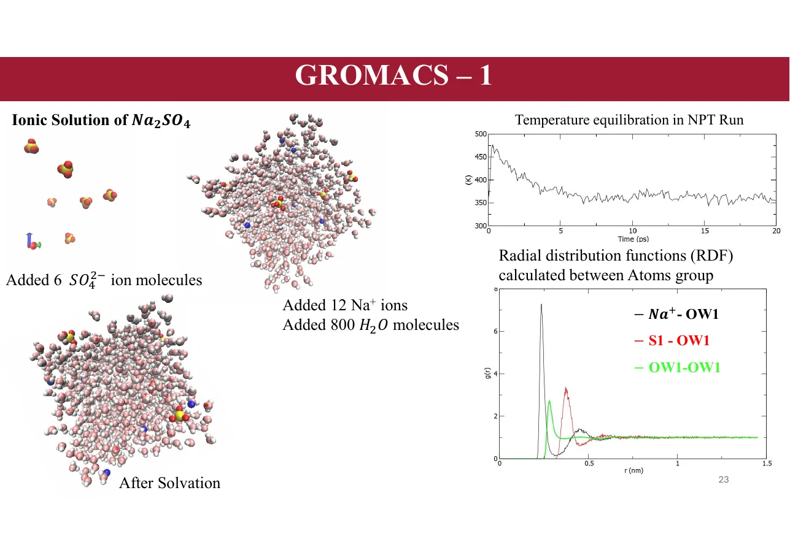
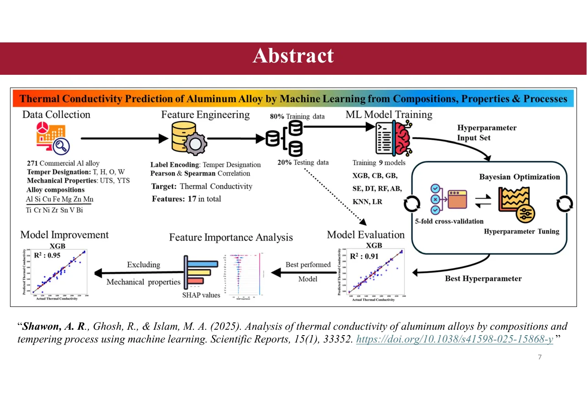
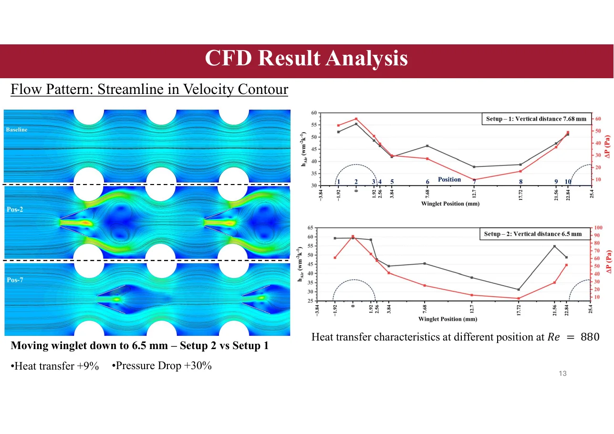

Molecular Simulation
LAMMPS and GROMACS studies of atomic systems, ionic solutions, and solvation behavior.
I combine molecular simulation, machine learning, and computational engineering to study advanced materials. My current research investigates functional membranes and ion dynamics for rare-earth separation.
From molecular trajectories to interpretable machine-learning models, my work connects simulation outputs with material performance.

LAMMPS and GROMACS studies of atomic systems, ionic solutions, and solvation behavior.

Data-driven property prediction, model interpretation, optimization, and multi-fidelity learning.

CFD and FEM applied to heat-transfer systems, structures, and manufacturing design.
Scientific Reports 15, 33352 (2025)
View publication · View code